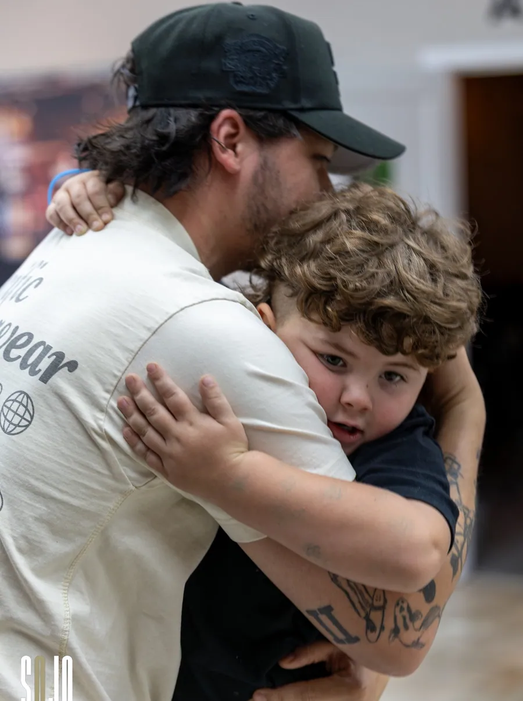
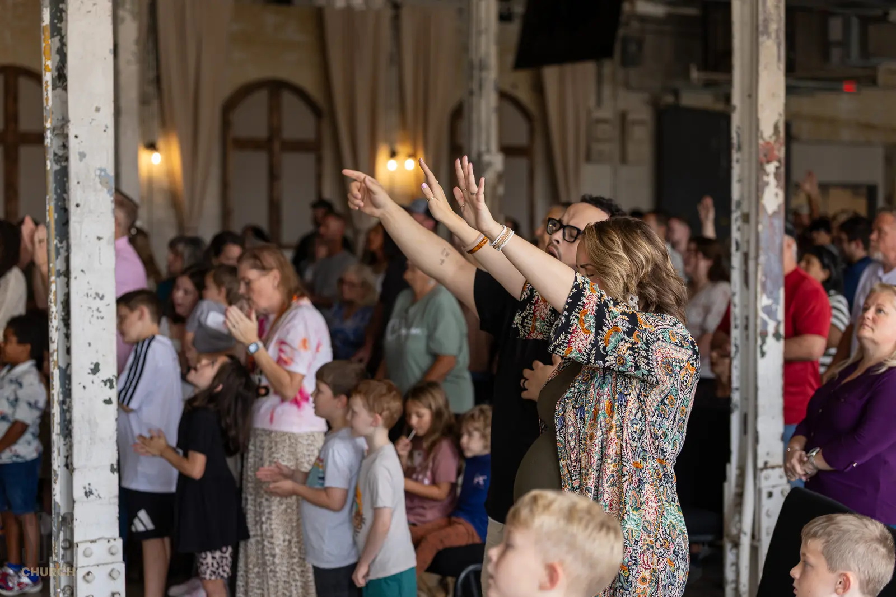
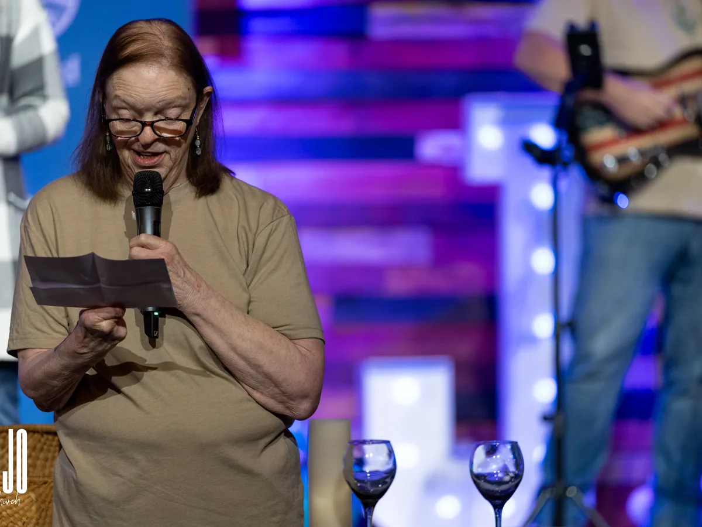

Our Mission
We are
a community
with a cause
And the cause is people. Helping them know life, grow in peace, and go in purpose.
Vision and mission
Two sentences
that decide
everything
Our vision is who we are: a community with a cause. Our mission is what we do about it: help people know life, grow in peace, and go in purpose.
Most churches have a statement on a wall that nobody can recite and nothing depends on. Ours is a filter. If a program, a Sunday, a budget line, or an announcement does not help somebody know, grow, or go, we stop doing it. That has cost us some good ideas.
A church exists for the people not yet in the room. If we shut our doors tomorrow, our city should miss us — not just the people who show up on Sunday. That is what makes a cause a cause instead of a slogan.
Underneath all of it sit two pictures from Scripture: Psalm 1, a tree planted by streams of water that bears fruit in season, and Ezekiel 47, a river running out from the temple that gets deeper the farther it goes and brings everything it touches to life. Formation over numbers. Depth before distance.

Movement one
Know life
“I came that they may have life, and have it abundantly.”
John 10:10
Life is not an achievement you unlock. It is a Person you meet — and you almost never meet Him alone.
Finding family. A lot of people walk through our doors without one, or carrying one that is hard to be around. The church is supposed to be the place where that gets answered — not with a program, but with people who save you a seat and notice when it is empty.
Finding community. Somewhere a person knows your name, your kids' names, and what you are actually walking through this week. That is not a bonus feature of following Jesus. It is most of how He does it.
And more than anything, finding Jesus among His people. He said where two or three gather, He is there. So the room is not the warm-up act for meeting Him — the room is often where it happens. You come looking for community and you run into Christ in the middle of it.
Then finding His plan for your life. Because you were not an accident and your life is not filler. There is something He made you for, and knowing Him is where you start finding out what it is.
What this looks like at SOJO
- Sunday services at 9 and 11am — teaching straight out of the Bible, aimed at real life
- A First-Time Guest table with a real person, a real gift, and zero pressure
- Discover SOJO — a meal and an honest conversation, last Sunday of every month
- Baptism, and the conversations that lead there
- A coffee shop opening 2027, so somebody can find us on a Wednesday instead of a Sunday

Movement two
Grow in peace
“Since we have been justified by faith, we have peace with God through our Lord Jesus Christ.”
Romans 5:1
Peace with God comes first, and it is not a mood. It is a standing. Settled, finished, bought. Everything else in this movement is learning to live like that is actually true.
It grows in a group. This is the one we push hardest, because it is the one that cannot be scaled or skipped. Eight to twelve people around a table who know your actual week. You can attend a church for years and stay a stranger; you cannot sit at somebody's table for eight weeks and stay one.
It grows in personal worship. The Bible on a Tuesday, not just from a stage on Sunday. Study that is yours. Prayer nobody else hears. Sunday is the meal you eat together; this is the food you learn to make at home.
It grows through accountability. Somebody with standing permission to ask you the question you would rather dodge — and the relationship to make the answer safe. Almost nobody grows past a certain point without this, and almost nobody volunteers for it until they trust the room.
And it grows because you want it. Peace with God is given. Peace in you is cultivated, and cultivation is slow. Psalm 1 does not describe someone who tried harder. It describes a tree planted somewhere, with roots first and fruit in season.
What this looks like at SOJO
- Groups — Connect, Community, Care, and Classes
- Discover More — three weeks, virtual, basic doctrine and discipleship
- Study and prayer rhythms you carry through the week, not just into the room
- Accountability inside a group, with people who earned the right to ask
- SOJO Kids, SOJO YTH and SOJO YA — Next Gen, birth through thirty

Movement three
Go in purpose
“As the Father has sent me, even so I am sending you.”
John 20:21
Purpose is not a fourth thing you add once the first two are handled. It is what the first two look like when they overflow. A person who knows life and is growing in peace starts leaking it — and it leaks into four places before it goes anywhere else.
Home. The hardest congregation you will ever preach to, and the one that matters most. If it is not working at your kitchen table, it is not working.
Church. Where you stop being a spectator. Peter calls all of us a royal priesthood — not a stage full of professionals and a room full of watchers.
Work. Where you spend most of your waking hours, next to people who will never come to a service but will absolutely notice how you handle a bad quarter.
Friends and neighbors. Your street, your group text, the people at practice. Here, near, and far starts with here.
And through the church, two specific things. Finding a place to give back through service — there is a spot with your name on it and the new building needs more hands than the old one did. And giving to God, which is where money stops being about survival and starts being about impact. Your giving alone does something. Pooled with everybody else's it does something you could never do by yourself — a kids' wing, a coffee shop with the doors open all week, meals delivered on a Tuesday, churches planted across North Carolina. That is Ezekiel's river: it does not pool inside the temple, it runs out, and everything it touches lives.
What this looks like at SOJO
- Serving on a Sunday team — kids, youth, worship, production, hospitality
- Giving — and seeing what your money does pooled with everyone else's
- Outreach partnerships like Meals on Wheels and HellFighters of Concord
- Church planting partners across North Carolina and around the world
- Your home, your job site, and your street — the assignments nobody schedules

The filter
Everything we do,
and where it fits
If something on this list stopped serving one of the three movements, it would come off the list. That has happened before.
Sunday morning → Know
The front door. Clear enough to follow with no church background, warm enough to come back to, honest enough that nobody feels handled.
SOJO Kids & Youth → Know and Grow
Age-specific rooms so that children and students meet Jesus for themselves and start being formed early, instead of inheriting somebody else's faith.
Discover SOJO → Grow
Last Sunday of every month, over a meal. Where belonging turns from a feeling into a decision.
Discover More → Grow
Three weeks, virtual, basic doctrine and discipleship. Roots before fruit.
Groups → Grow
Tables where formation actually happens. The part that cannot be scaled and cannot be skipped.
Serving → Go
Priesthood in plain clothes. You were gifted on purpose and pointed at somebody.
Missions → Go
Here, near, and far. Concord and Gibson Village, church planting across North Carolina, and partners among the nations.
Giving → Go
Generosity is a formation practice that funds a sending mission. It sits on both ends of this list.
“If we shut our doors, our community should miss us. Not just the people who come to SOJO on Sundays.”
Pastor Corey Alley · Lead Pastor
So — which one is yours?
Know, grow,
or go
Most people can tell within a few seconds which of the three they are standing in front of right now. Start there.